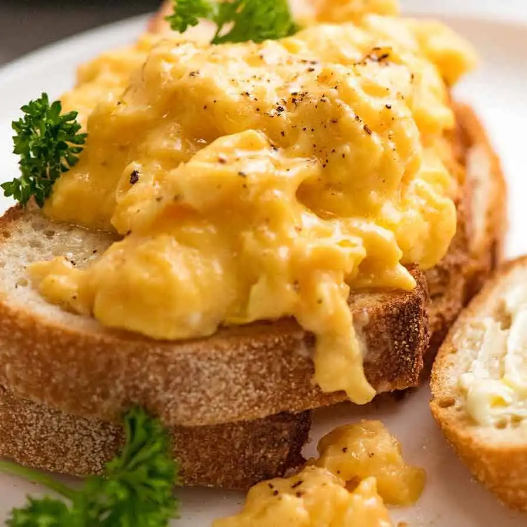
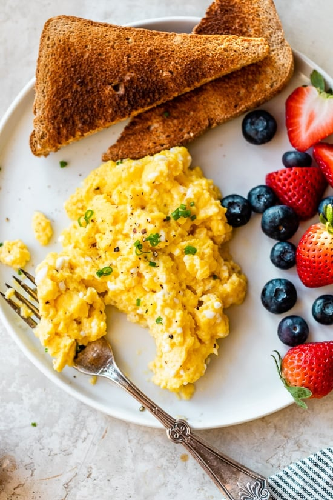

Scrambled Eggs
You've just woken up. You've barely taken a sip of your coffee, your brain is half-asleep, and yet you need to know how to make scrambled eggs that are perfectly buttery, not too runny, and definitely, definitely not rubbery, hard, or dry.
Ahead we'll teach you exactly how to make scrambled eggs that come out pillowy soft every single time, without any fuss, complicated technique, or oddball ingredients. Let's get cooking!



HOW TO MAKE SCRAMBLED EGGES?
STEPS
- Crack, season, and whisk in a mixing bowl.
- Heat some butter in a pan.
- Add your egg mixture to the pan.
- Keep the eggs moving.
- Wait until the eggs begin to set.
- Don't let your eggs dry out.
- Eat your perfect scrambled eggs!